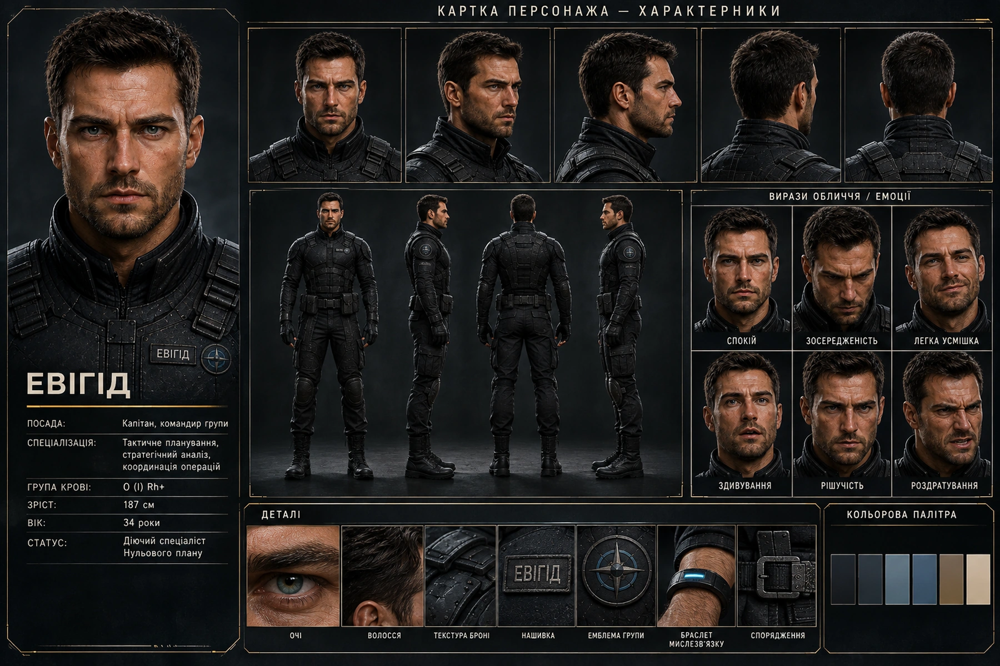

PROFILE
Reconnaissance team commander
Evihid leads a kharakternyk team assigned to explore other plans and unfamiliar objects. During missions, he coordinates the team, uses the thought-link to share information and decides whether to continue reconnaissance or withdraw.
Position: Captain, team commander
Specialisation: Tactical planning, strategic analysis and operational coordination
Age: 34
Height: 187 cm
Blood type: O (I) Rh+
Status: Active Zero Plan specialist
Team: Kamil and Michel
RECONNAISSANCE MISSIONS
Investigating unknown objects
While investigating a tower, Evihid and his team use drones to survey the area. Their images and readings help reveal hidden structures and energy objects. He follows the reconnaissance through the thought-link and coordinates the team's actions.
During a mission in Earth's orbit, Evihid takes part in examining the wreckage of alien ships. The teams search for technology, collect information and check for surviving prisoners.
CONTACT WITH THE HORNED
The decision to withdraw
While investigating a tree on an unknown plan, the team encounters the horned beings. Evihid realises that the attackers are coordinating through a shared signal and continues retrieving data from the surviving drones after combat begins. When the situation becomes critical, he opens a portal to the home plan and leads the team out with the gathered information.
CAPTIVITY
Portals blocked
Later, Evihid is captured by the horned beings. A metal collar prevents him from opening portals. He spends the first days under guard, trying to understand how the device works and find a way to free himself.